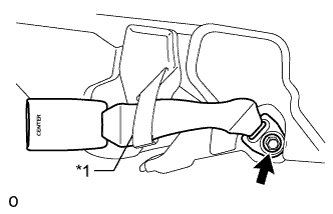

ЗАМОК ЦЕНТРАЛЬНОГО РЕМНЯ БЕЗОПАСНОСТИ ЗАДНЕГО СИДЕНЬЯ В СБОРЕ (для моделей с сиденьем раздельного типа 60/40 с двойным складыванием с правой стороны) > СНЯТИЕ |
| 1. СНИМИТЕ ПОДГОЛОВНИК ЗАДНЕГО СИДЕНЬЯ В СБОРЕ |
Снимите подголовник.
| 2. СНИМИТЕ ОБИВКУ СПИНКИ ЗАДНЕГО СИДЕНЬЯ |
Нажмите на кнопку разблокировки замка спинки сиденья, чтобы снять блокировку и сложить спинку сиденья.
 |
С помощью отвертки освободите 4 захвата и снимите крышку.
| 3. СНИМИТЕ ПАНЕЛЬ ПОКРЫТИЯ СПИНКИ ПРАВОГО ЗАДНЕГО СИДЕНЬЯ В СБОРЕ |
С помощью съемника фиксаторов расцепите 5 фиксаторов.
Освободите 2 захвата и снимите панель покрытия.
| 4. СНИМИТЕ СПИНКУ ПРАВОГО ЗАДНЕГО СИДЕНЬЯ В СБОРЕ |
Выверните болт, освободите 2 захвата, а затем отсоедините ремень безопасности.
Выверните 2 болта, крепящих спинку сиденья к полу.
Сложите спинку сиденья, выверните болт из петли, а затем снимите спинку сиденья.
| 5. СНИМИТЕ ЗАМОК РЕМНЯ БЕЗОПАСНОСТИ ЗАДНЕГО ЦЕНТРАЛЬНОГО СИДЕНЬЯ В СБОРЕ |
|  |
Отсоедините крепежную ленту и снимите ленту.
Отверните болт и снимите замок ремня безопасности.
| *1 | Ленточный хомут |